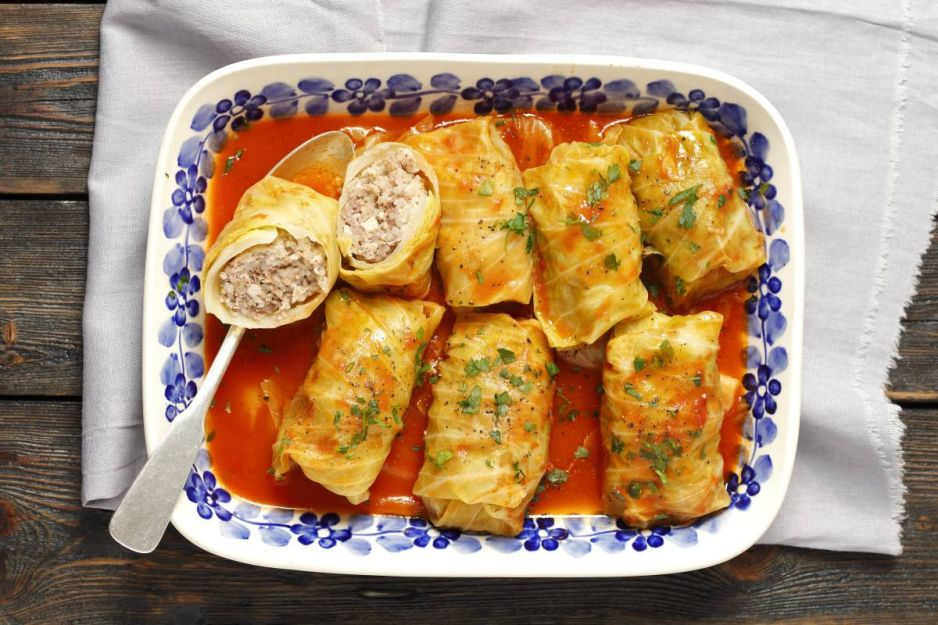

Golabki (Stuffed Cabbage)

Description
This stuffed cabbage recipe, known as halupki on the Ukrainian side of my family,
is made with beef, pork, and rice encased in cabbage and drizzled with a thin,
sweet tomato sauce. My grandma Eugenia taught me how to make this. Every family has
their own twist on this traditional dish.
Enjoy with mashed potatoes just as we always do in my family!
Ingredients
- 1 head cabbage, cored
- water to cover
- ¼ teaspoon salt
- 1 ½ pounds lean ground beef
- 1 ½ pounds ground pork
- 1 ½ cups cooked white rice
- 2 large eggs, slightly beaten
- ¼ cup finely chopped onion
- 2 tablespoons chopped fresh parsley
- ½ teaspoon garlic powder
- ½ teaspoon salt
- ½ teaspoon ground black pepper
- 1 (28 ounce) can tomato sauce
- ¼ cup white vinegar
- 2 ⅔ tablespoons white sugar
Steps
- Place cabbage in a stockpot; pour over enough water to cover. Add 1/4 teaspoon salt;
bring to a boil over medium-high heat. Turn cabbage every 2 to 3 minutes; transfer any
leaves that separate from cabbage into a strainer to drain and cool. Continue to boil
until all the leaves have cooked, about 15 minutes. Reserve 1 1/2 cups of cabbage
cooking water.
Cut out the tough, thick center ribs of any large cabbage leaves with a sharp knife.
- Preheat the oven to 350 degrees F (175 degrees C).
- Mix ground beef, ground pork, cooked rice, eggs, onion, fresh parsley,
garlic powder, salt, and pepper in a large bowl until combined. Lay 1 cabbage
leaf on a flat surface; place 1 heaping tablespoon of filling at the base of a
cabbage leaf.
Overlap with the bottom of the leaf; fold in side edges and roll up.
- Repeat with remaining large cabbage leaves and filling.
- Cut any leftover cabbage leaves into pieces and place in
the bottom of a roasting pan. Layer stuffed cabbage rolls on top.
- Combine tomato sauce, reserved cabbage water, white vinegar, and white sugar in a
bowl;
pour mixture over cabbage rolls. Cover roasting pan with aluminum foil.
- Bake in the preheated oven until filling is cooked through and sauce has thickened,
about 2 1/2 hours. Baste stuffed cabbage rolls every hour.